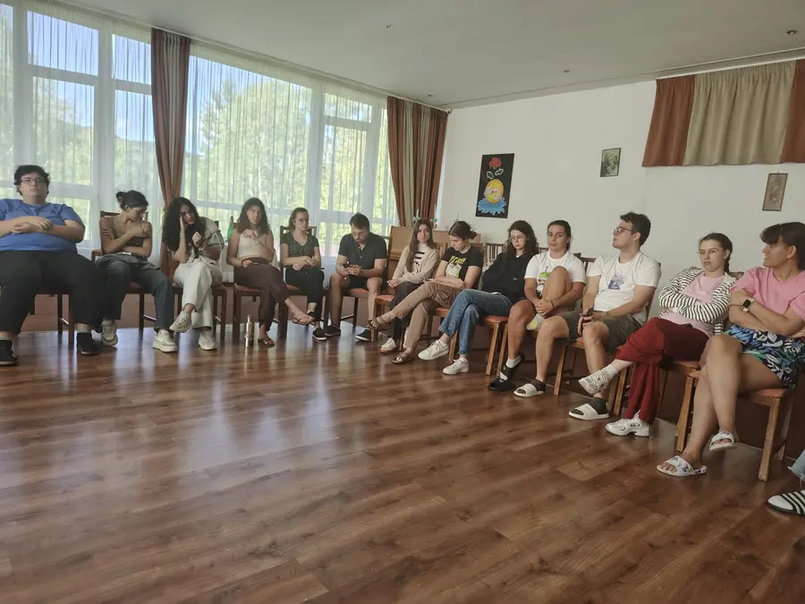

Mladá Vlna.
Spolu meníme východné Slovensko k lepšiemu. Pre každého, no hlavne pre mladých.
Posúvaj · upraceme les
Naša misia
Zmena začína tam, kde žiješ.
Mladá Vlna je mládežnícke občianske združenie z východného Slovenska. Pomáhame mladým ľuďom byť aktívni vo vlastnej komunite: starať sa o miesto, kde žijú, učiť sa nové zručnosti a byť tu jeden pre druhého.
01 · Životné prostredie
Čistejšie Košice a Prešov, vrece po vreci.
Organizujeme upratovacie akcie v Košiciach a Prešove: v parkoch, pri cestách aj na okraji lesa. Pridať sa môže ktokoľvek, stačí prísť.
Nejde len o odpad. Pri spoločnej práci sa ľudia spoznajú, vidia výsledok hneď a začnú si všímať, čo sa okolo nich deje.

02 · Digitálne zručnosti
Technológie pre každého, nielen pre tých, čo mali šťastie.
Pracujeme s mladými ľuďmi s menšími príležitosťami. Učíme ich používať nové technológie ako nástroje vzdelávania a tvorby, nie len ako niečo, čo sa deje okolo nich.
- Umelá inteligenciaAko sa s AI učiť, hľadať informácie a tvoriť, s kritickým pohľadom.
- Vibe codingVlastná webstránka alebo aplikácia tak, že ju opíšeš AI. Programovať vopred nemusíš vedieť.
- 3D tlačOd nápadu k predmetu, ktorý chytíš do ruky. Navrhneš ho, vytlačíš a zistíš, čo všetko dokážeš.
03 · Duševné zdravie
Niť, ktorá spája všetko ostatné.
Každá naša aktivita je aj miestom, kde sa mladí stretnú, porozprávajú a cítia, že niekam patria. Či už upratujeme, tlačíme v 3D alebo cestujeme, ide nám o to isté.
Vytvárame bezpečný priestor, kde sa mladí ľudia prepájajú, zdieľajú, čím prechádzajú, a spoločne zvládajú výzvy, ktoré by sami niesli ťažko.

Projekty Erasmus+
Naše aktivity.
Výmeny Erasmus+ sú časť toho, čo robíme. Na týždeň spoja mladých z celej Európy a domov si prinesú nápady pre vlastnú komunitu.
 Demokracia
Demokracia
Populism 101
Orahovica, Chorvátsko · 07/2026
 Ekológia
Ekológia
The Masters of Puppets
Rymanów, Poľsko · 03/2026
 Ekológia
Ekológia
Smart & Sustainable
Košice, Slovensko · 12/2025
 Ekológia
Ekológia
ReToy
Košice, Slovensko · 09/2025
 Ľudské práva
Ľudské práva
CTRL + ALT + RIGHTS
Stara Zagora, Bulharsko · 06/2025
Tu môže byť tvoja výmena.
Momentálne nie je otvorená žiadna výzva. Nové oznamujeme na Instagrame.
Instagram


Ako sa zapojiť
Cesta k tvojej prvej výmene.
- Krok 1
Vyber si projekt
Pozri si otvorené výzvy a infopack s programom, miestom a podmienkami.
- Krok 2
Vyplň formulár
Stačí mať 13 až 30 rokov.
Napíš nám poriadnu motiváciu: prečo chceš ísť a čo so sebou prinesieš. - Krok 3
Ozveme sa ti
Po zvážení všetkých prihlášok ťa oslovíme. Prednosť dávame mladým ľuďom s menšími príležitosťami.
- Krok 4
Zbaľ sa a cestuj
Ubytovanie a stravu hradí grant EÚ. Cestovné ti preplatíme po projekte.